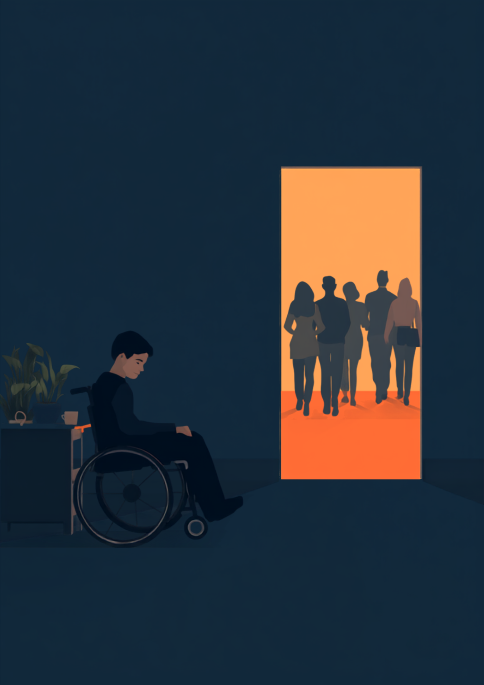
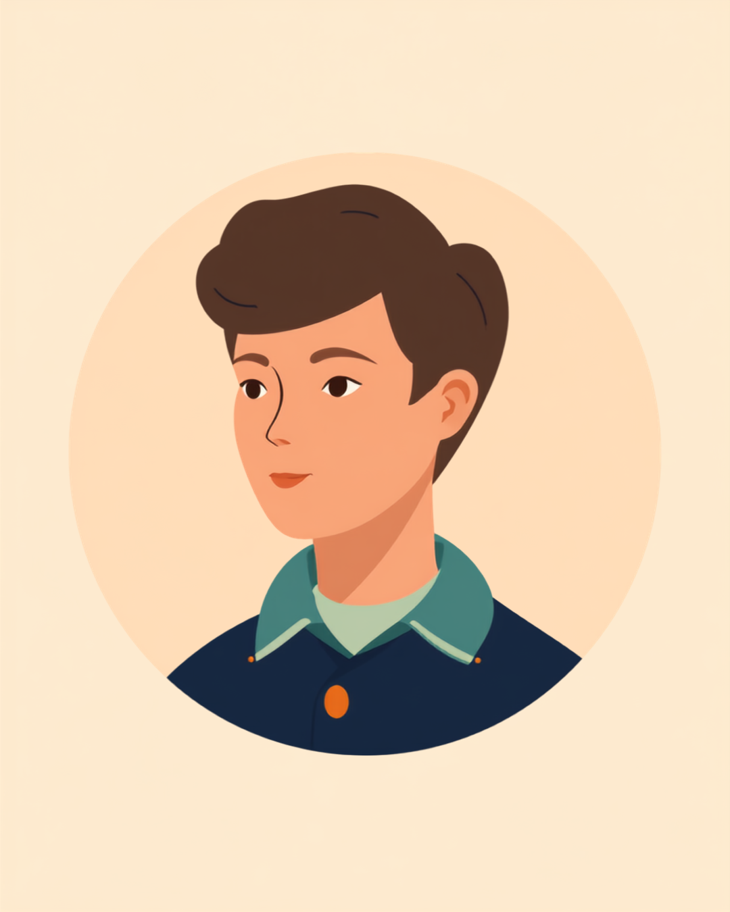

避難訓練の号令がかかった瞬間、「自分は数に入っているか」
就労支援の現場で関わってきた中で、避難訓練のあとにふと漏らされる言葉があります。「みんなが避難する後ろ姿を、ただ見ていました」というものです。避難訓練は、多くの社員にとって数分で終わる年中行事のひとつに過ぎません。けれど、車椅子を使っている人、耳からの情報が届きにくい人、大きな音がきっかけで体が動かなくなる人にとっては、その数分が「自分の存在がどこまで想定されているか」を測る時間になってしまうことがあります。
実際に、避難訓練の最中にエレベーターが止まり、車椅子を使う社員をどう運ぶか現場で決まっておらず、フロアに取り残されてしまったという出来事が報道されたこともあります。多くの職場では、避難経路や集合場所は決めてあっても、「体が不自由な人を誰が、どうやって運ぶか」までは決まっていないことがあるようです。
「入社2年目の秋に、初めての避難訓練がありました。人事から『エレベーターは止まるので、誰かが運びます』とだけ説明されて、え、誰が、って聞いたら『そこはまだ決まってないんですけど、当日決めます』って。当日、非常階段の前でみんな待機してるのに、結局『じゃあ誰かついて』みたいな空気になって、5分くらい誰も動かなくて。正直あの5分がすごく長く感じました。悪気がないのは分かってるんですけど、自分だけ荷物みたいに扱われてる気がして、その日は家に帰って一人でちょっと泣きました。今の職場では、訓練の前に必ず担当の2人を決めて、実際に階段を一緒に降りる練習までしてくれるので、だいぶ安心して働けています。」
運ぶ人が決まらない、放送が聞こえない、体が動かない
一口に「避難訓練で困る」といっても、障害の種類によって詰まる場所はまったく違います。車椅子を使う人は「誰が、どの経路で運ぶか」という移動そのものが課題になりやすく、聴覚に障害のある人は「館内放送や警報の内容が分からない」という情報の壁にぶつかりやすい傾向があるようです。さらに、パニック障害や音への過敏さがある人は、サイレンの音そのものが引き金になって体が動かなくなってしまうことがあるとされています。
この図のようにつまずく場所は違っても、根っこにあるのは同じ構造です。必要な情報や移動手段が、その人に届く形で用意されていない、ということです。裏を返せば、避難訓練の前に「誰が」「どの情報を」「どうやって」届けるかを決めておくだけで、当日の混乱はかなり減らせる場合があります。
「工場勤務で、避難訓練のたびに大きなサイレンが鳴るんですけど、正直あれが本当に苦手です。3年くらい通院していて、大きな音や急な警報に体が固まってしまうことがあって。去年の訓練のときは、サイレンが鳴った瞬間に足が動かなくなって、その場にしゃがみこんでしまいました。周りは『え、大丈夫?』ってざわついて、めちゃくちゃ気まずかったです。事前に上司には伝えてたんですけど、伝えたはずなのに現場のみんなは知らなくて、結局その場で説明し直す羽目になりました。今年は耳栓をつけていいことになって、それだけでもだいぶ違いました。」
当日になって困らないために、事前にできること
経路を一緒に歩いておくという方法
移動に不安がある場合、訓練の日にいきなり本番を迎えるのではなく、事前に担当者と経路を歩いておく方法があります。エレベーターが止まる想定で、どの階段を、誰と、どの順番で使うのかを一度決めておくだけで、当日「誰が運ぶかその場で相談する」という状況を避けやすくなります。
情報を「目で見える形」にしてもらうという方法
音声だけの放送では情報が届きにくい場合、避難放送と同時に社内チャットや電光掲示板で文字情報を流してもらえないか相談する方法があります。すべての職場ですぐに対応できるとは限りませんが、「放送と同時にチャットに一言書いてほしい」というくらいの具体的な頼み方から始めると、進めやすい場合があるようです。

苦手な音がある場合の準備
サイレンや警報音がきっかけで体が動かなくなる場合、我慢して参加するのではなく、耳栓の使用や、少し離れた場所からの見学など、代わりの参加方法を事前に相談しておく方法があります。
- 「エレベーターが使えないとき、どの階段を誰と使うか」を事前に決めて一度歩いておく
- 「放送と同時に文字でも情報を流してほしい」など、情報を届ける手段を具体的に伝える
- 「サイレンが苦手なので耳栓をつけたい／少し離れた場所で見学したい」と当日の対応を先に共有する
- 緊急連絡先や必要な配慮を書いたカードを携帯し、担当者以外にも伝わる状態にしておく
個別避難計画という考え方と、相談できる窓口
障害者雇用促進法では、企業に対して障害のある従業員が働きやすいように合理的配慮を提供することが義務付けられているとされています。避難訓練における移動手段や情報保障も、この合理的配慮に含まれ得る場面のひとつです。ただし、どこまでの対応が可能かは職場の規模や設備によっても異なるため、まずは相談してみることが第一歩になります（2026年9月時点の情報です）。
相談できる窓口
- 職場の防災担当者・人事（避難経路や担当者を事前に確認する）
- 職場に選任されている産業医（体調に応じた参加方法の相談）
- 自治体の防災担当窓口（個別避難計画の取り組み状況の確認）
- 就労移行支援事業所や支援機関（職場との調整が難しいときの相談先）
よくある質問
関連記事
この記事に、聞いてみたいことはありますか？
「自分の場合はどうなんだろう」と思ったことを、気軽に書いてみてください。いただいた質問は個別にお返事したうえで、匿名で記事にすることがあります。
mimemime代表。就労支援の現場経験をもとに、障がいのある方の働く不安に寄り添う記事を執筆。